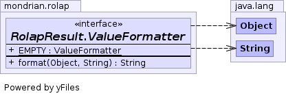

static interface RolapResult.ValueFormatter
Every Cell has a value, a format string (or CellFormatter) and a formatted value string. There are a wide range of possible values (pick a Double, any Double - its a value). Because there are lots of possible values, there are also lots of possible formatted value strings. On the other hand, there are only a very small number of format strings and CellFormatter's. These formatters are to be cached in a synchronized HashMaps in order to limit how many copies need to be kept around.
There are two implementations of the ValueFormatter interface:
RolapResult.CellFormatterValueFormatter, which formats using a
user-registered CellFormatter; and
RolapResult.FormatValueFormatter, which takes the Locale object.

| Modifier and Type | Field and Description |
|---|---|
static RolapResult.ValueFormatter |
EMPTY
Formatter that always returns the empty string.
|
static final RolapResult.ValueFormatter EMPTY